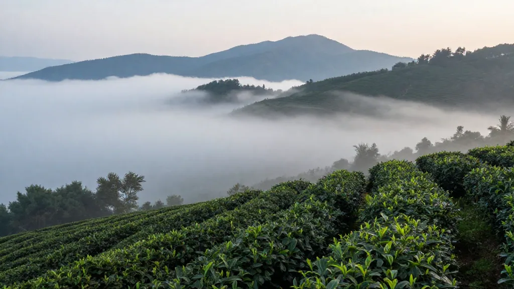

阿鳳姐講茶｜第140屆廣交會來了，外單復甦？師傅們點算
▎引言：廣交會70年，最大規模的一屆來了
今日打開電腦，三條新聞一齊彈出來——
十五部門聯合發文，茶產業「十五五規劃」出爐；潮州凤凰单丛茶文旅數字出爐，年接待200萬人次，收入16億；陳皮養生需求持續升溫，藥食同源中式養生水市場瞄準100億關口。
三條新聞擺埋一齊，作為喺鳳凰鎮做咗三十年茶嘅人，我話你知：呢個係政策、风口、需求三輪驅動疊加嘅時代，但係——
機會唔等人，但係人都唔一定接得住。
第一幕：政策紅利——「百億集群」呢舊肉，邊個食得到？
工業和信息化部、商務部、文化和旅樂部等十五個部門聯合印發《茶產業提質升級指導意見（2026—2030）》，明確2028年前培育5個以上百億元級茶產業集群，到2030年茶產業鏈總規模突破1.5萬億元。
我第一時間打電話俾烏岽村文師傅，佢聽完就一句：「阿鳳，百億集群，關我咩事？」
呢句說話先係眞問題。
政策文本好睇，但係落到鎮上工廠、合作社、茶農，傳導需要時間。百億集群扶持龍頭企業、示範基地、品牌建設——個個都話自己係龍頭，但係供應鏈最末端果班師傅，佢哋最關心嘅係：收購價升唔升？合作社補貼到唔到位？電商新規落地，直播帶貨要幾多資質？
電商平台茶葉推廣新規落地——直播帶貨進入規範化發展階段。呢個對於規範化嘅龍頭企業係利好，但係對一班靠價格優勢跑量嘅中小商家，門檻提高了。
文師傅話：「我啲茶從來唔靠直播，我靠口碑。但係我啲仔女話，唔做直播就死得。你話聽邊個？」
第二幕：茶文旅升溫——「大夫第」變博物館，但係遊客買唔買茶？
潮州鳳凰鎮茶區變景區、茶園變公園，年接待遊客約200萬人次，茶文旅綜合收入超16億元。當地百年潮式僑宅「大天大夫第」活化為全國首個單叢茶主題博物館，展出近700年宋種古茶樹標本。
呢個數字幾好睇。
但我做茶現實嘅，我關心嘅係：呢200萬人次，幾多個變成茶葉消費者？
我哋鎮上以前有個說法：「遊客來了影相走人，茶葉樣品試飲一大堆，真正買單嘅三成都冇。」
博物館係幾時起嘅？係提升消費體驗嘅基礎設施，但係如果導賞解說唔到位、文化故事講唔好，遊客就係參觀一個擺滿茶餅嘅古宅，影張相，走人。
烏岽山天池景區結合高山杜鵑與茶園，秋季節日人流旺——但係天池景區喺山上，茶葉工廠喺山下，遊客喺景區影完相落山，好少會特意走埋去茶廠門市。
我哋需要嘅唔係景區俾幾多人流，而係：幾時有人幫我哋將人流轉化成訂單。
第三幕：養生風口——陳皮需求暢旺，但係「藥食同源」呢個牌幾時打到消费者心度？
中式養生水市場規模預計2026-2028年突破100億元大關。陳皮、茯苓、黃精等藥食同源食材零食化、即食化形態層出不窮。2026年新會陳皮市場走勢暢旺，3-5年入門級陳皮均價約300-600元/斤，5-15年陳皮達600-3000元/斤。
呢個係眞實需求拉動，唔係政策催谷。
但係我見到一個問題：「藥食同源」喺專業人士度係共識，但係喺普通消費者心度仲係一個陌生名詞。
我哋做茶嘅，唔能只係「溫中理氣」四个字寫喺包裝上就算數。消費者需要知道：乜嘢係藥食同源？陳皮點解係？乜嘢情況下飲陳皮係養生、乜嘢情況下唔啱？
呢個係內容嘅機會，亦都係品牌嘅機會。
第四幕：廣交會來了——外單復甦？師傅們準備好未？
第140屆廣交會第一期10月15–19日，總展覽面積155萬平方米，史上規模最大。參展價值：被譽為「中國第一展」，每屆成交額數百億美元，接觸全球採購商嘅最佳窗口。
我哋茶葉做外單，廣交會係主戰場。
但係文師傅提過一個好實在嘅問題：「而家外國客人訂單有幾個特點——要認證、要SC/ISO、要可持續供應鏈文件、要ODM能力。我哋師傅工廠本來就係一群老師傅，文件審批流程唔熟悉，語言又唔得——點算？」
呢個就係我哋要面對嘅現實：政策紅利、需求風口、流量機會，全部都係外因；內因——係我哋自己嘅供應鏈能力、品牌能力、數字化能力。
阿鳳姐三句話
第一句：政策紅利落地需要時間，唔好低估傳導過程。 百億集群、規範化直播，聽落好靚，但係師傅工廠最關心嘅收購價、補貼到位、認證門檻——呢啲先係落地抓手。有政策紅利，唔代表每個人都可以食到。
第二句：茶文旅嘅數字係參考，變現先係答案。 200萬人次、16億收入，呢啲數字喺媒體度好睇。但係遊客轉化率、客單價、品牌認知度——呢啲數字先係茶廠老細眞正要追嘅指標。古宅活化係好事，但係要有配套體驗和變現路徑。
第三句：養生風口係眞需求，但係要解決「知道唔知點解」呢個問題。 陳皮需求暢旺，但係消費者唔係天然就知道點解要買陳皮。我哋做茶嘅，有責任將「藥食同源」呢個概念翻譯成消費者聽得明、記得住、願意分享嘅語言。
FAQ
問：茶產業「十五五規劃」對中小茶商有乜影響？
答：規劃利好龍頭企業同規範化運作嘅商家，但係中小茶商要留意電商新規落地後直播帶貨門檻提高。認證資質、SC/ISO文件會成為外單標配，早準備早主動。
問：茶文旅200萬人次算多嗎？點轉化為茶葉銷售？
答：數字可觀，但係變現係關鍵。建議茶廠開發「茶文旅體驗套餐」，結合博物館參觀+工夫茶體驗+茶葉品鑒，将遊客轉化為長期客户。
問：陳皮養生需求暢旺，價格走勢點睇？
答：3-5年入門級300-600元/斤、5-15年600-3000元/斤，養生需求係核心驅動力。但係建議消費者選擇可靠渠道，避免低價假貨。
問：廣交會參展值唔值？
答：做外單必去，接觸全球採購商嘅最佳窗口。但係要提前準備認證文件、ODM能力、ODM展示方案。外單客人關心嘅係供應鏈合規性，唔只係茶葉品質。
*惠州凤凰茶业·阿凤姐*
*地址：广东省惠州市惠城区鹅岭南路16号（Hub98+商场）*
*电话/微信：136-3199-1888*
*营业时间：周一至周六 09:00-18:00*
* QQ：398336088*
*茶叶批发·零售·企业定制·节日礼盒*
SEO关键词
#凤凰单丛 #中秋茶礼 #蜜兰香 #凤凰茶新种 #茶中香水 #广交会茶业 #茶文旅 #陈皮养生 #药食同源 #茶叶选购指南 #凤凰山 #乌岽单丛 #惠州茶叶